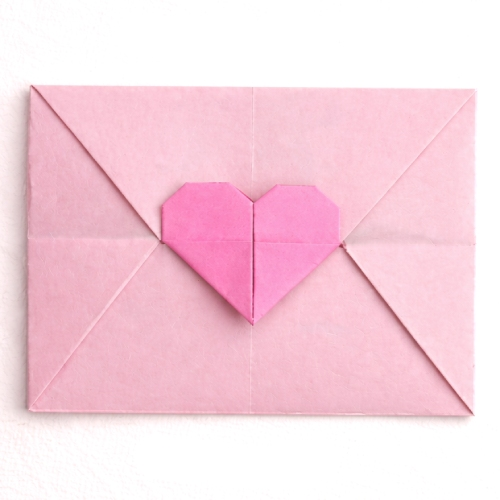
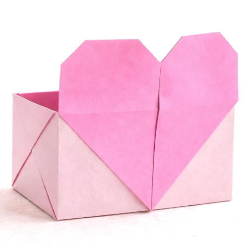
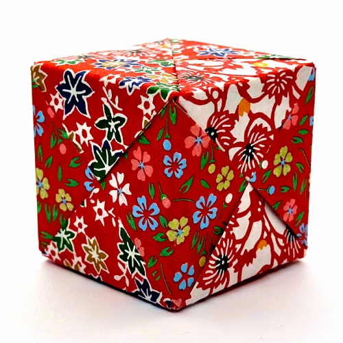

Paper Heart Envelope

Paper Heart Box

Paper Heart Card

Paper Cube
Useful Origami designs are creative and practical paper models that help kids learn while having fun. These origami creations can be used in daily life, such as making paper boxes, holders, bookmarks, and simple organizers. Folding useful origami helps improve concentration, problem-solving skills, and fine motor skills. With easy and clear step-by-step instructions, children can create helpful paper items and enjoy a hands-on learning experience. Useful origami encourages creativity, confidence, and the habit of making something meaningful from simple paper.
Paper Heart Envelope
Paper Heart Box
Paper Heart Card
Paper Cube